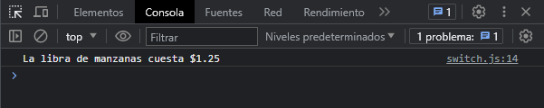

Si ocurre una coincidencia, el programa ejecuta las declaraciones asociadas correspondientes. Si la expresión coincide con multiples entradas, la primera sera la seleccionada, incluso si las mayúsculas son tenidas en cuenta.
El programa primero busca la primer instancia case cuya expresión se evalúa con el mismo valor de la expresión de entrada y luego transfiere el control a esa clausula ejecutando las declaraciones asociadas. Si no se encuentra una clausula de case coincidente, el programa busca la clausula default opcional, y si encuentra, transfiere el control a esa instancia.
La declaración break es opcional y esta asociada con cada etiqueta de case y asegura que el programa salga del switch una vez que se ejecute la instrucción coincidente y continue la ejecución en la instrucción siguiente. Si se omite el break el programa continua la ejecución en la siguiente instrucción.
Usando #switch
let verduras = "manzanas"
switch (verduras) {
case "peras":
console.log(`La libra de peras cuesta $2.15`)
break;
case "uvas":
console.log(`La libra de uvas cuesta $3.55`)
break;
case "fresas":
console.log(`La libra de fresas cuesta $1.15`)
break;
case "manzanas":
console.log(`La libra de manzanas cuesta $1.25`)
break;
default:
console.log(`Busca ayuda a un asociado`)
break;
}
En el ejemplo anterior se evalúa la variable verduras, según sea el caso entrara en la ejecución en la instrucción correspondiente, en este ejemplo la ejecución se realiza en "manzanas" teniendo como resultado:
